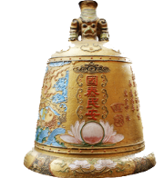
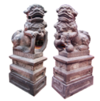
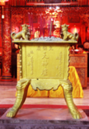
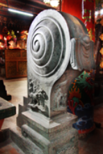
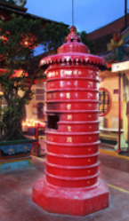
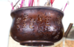
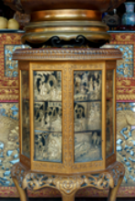
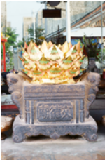
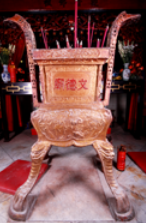

Epigrafi
Kelenteng Boen Tek Bio merupakan salah satu kelenteng yang bangunannya tertua di kota Tangerang. Beberapa peninggalan benda antik yang merupakan aset kelenteng yang tak ternilai harganya, semua benda tersebut merupakan sumbangan dari para umat yang di masa yang lalu telah memperoleh pertolongan dari YMS Kwan 1m Hud Couw.
Pada bagian atas Kelenteng Boen Tek Bio, terlihat dua pasang naga (liong) berhadapan dengan mustika (cu). Dibagian bawahnya terdapat sepasang burung Hong dengan bunga Botan. Semuanya terbuat dari kertas tipis (kim coa) diaduk dengan gula ceng, kemudian ditempelkan beling-beling beraneka warna, diujung talang empat penjuru terlukis kepala ikan Hok dan kepala burung Eng.
 | Genta / Lonceng Di sebelah kanan pintu masuk, terdapat genta atau lonceng besar yang indah dibuat di Tiongkok di perusahaan pengecoran Ban Coan Lou pada tahun ke-1 5 periode To Kong It Bi (1835). Di badan genta terdapat inskripsi "hong tiau I sun, kok thai bin an", artinya "Semoga cuaca baik dan menguntungkan bagi tanaman di sawah lading, semoga Negara damai dan rakyat sejahtera". Di salah satu bagiannya terdapat dekorasi motif naga di dalam awan dan ikan (li hi, mas atau tambera). Selain itu juga tertera bahwa genta ini merupakan sumbangan Oei Heng Goan yang berasal dari kabupaten Tin Peng koan, keresidenan Ke Eng Ciu propinsi Kui tang. |
 | Singa Batu / Cioh Sai Jika kita memasuki Kelenteng Boen Tek Bio di depan pintu gerbang terdapat sepasang Singa Batu (Cioh Sai). Cioh Sai ini bergaya selatan, khususnya Kuitang (Guandong), berbeda dengan gaya utara Pak Kia (Beijing). Pada bagian alas berbentuk segi empat dari singa jantan yakni yang berada di sebelah kiri depan Kelenteng Boen Tek Bio terdapat angka tahun ke-7 periode To Kong Teng Hai (1827) dari Dinasti Cheng. Pada alas singa betina yang kanan tercantum nama penyumbang yaitu Thio Tek Hay. Sepasang Cioh Sai biasanya merupakan penjaga bangunan istana, pemerintahan, kelenteng dan lain-lain sebagai lambang kekuatan dan keberanian. |
 | Thian Sin Lou / Thian Gong Lou Di halaman depan terdapat Thian Shin Lou atau Thian Gong Lou yang merupakan tempat menancapkan hio untuk Tuhan Yang Maha Esa. Di bagian muka hiou Iou terdapat tulisan Thian Sin Lou (artinya hiou Iou untuk bersembahyang kepada Tuhan Yang Maha Esa) disumbangkan Oleh Oei Goat Hoa pada tahun ke-19 periode To Kong Ki Hai (1839). Di Sisi sebaliknya pada bagian yang menghadap ke dalam, tertera tulisan Ci Po Lou (nama perusahaan pengecoran). |
 | Tambur Batu / Cioh Kou Di samping Thian Shin Luo ada sepasang tambur batu (Cioh Kou atau Phau kou Cioh). Cioh kou adalah batu berukir berbentuk bundar padat, di atas alas berbentuk segi empat. Sepasang cioh kou biasanya diletakkan di kedua Sisi luar pintu utama. Bagian tamburnya sangat sederhana agak polos dan bermotifkan spiral, sedangkan bagian bantalannya berbentuk segi empat berhiaskan ukiran orang-orangan yang diambil dari kisah kisah popular. Cio kou ini disumbangkan pada tahun ke-4 periode Ham Hong Kah In (1854) Oleh Tan In Heng. |
 | Tempat Pembakar Kertas Di sebelah tambur batu ada tempat pembakaran kertas sembahyang (Ji Coa Lou dan Kim Ci Lou). Secara umum tempat pembakaran kertas sembahyang biasanya disebut Kim Lou, yang artinya tungku pembakaran kertas emas. Sepasang Kim Lou berbentuk dasar silinder yang terbuat dari logam bercat merah. Kim Lou yang di sebelah kiri bertuliskan Ji Coa Lou, artinya tempat pembakaran kertas-kertas bertuliskan atau bercetak huruf-huruf Tionghoa, serta dihiasi sepasang tui lian berbunyi "cun cong su seng cek, hin khi ngou bun ciang". Kim Lou yang kanan bertuliskan "kim ci Iou" yang artinya 'tempat pembakaran kertas sembahyang", serta dihiasi sepasang tui lian yang berbunyi 'Iseng i hui bu hau, khian sim teng iu leng". Kedua kim Iou ini dibuat pada tanggal 4 bulan 4 tahun kedua periode Soan Thong Ke Sut atau Khongcu tahun 2461 (1 910). |
 | Sam Kai Lou Setelah kita sembahyang di Tuhan Yang Maha Esa, selanjutnya ada Hio Lou yang tergantung di bagian depan paseban yang disebut "Sam Kai Lou" artinya Hio Lou untuk bersembahyang kepada YMS Sam Kai Kong atau YMS Sam Kwan Tay Tee. Sam Kai Lou ini berasal dari tahun ke-25 periode To Kong It Ci atau tahun 1845, disumbangkan Oleh Oei Koei An dari Tin Ip (kabupaten Tin Peng Kwan), Soat Tang (propinsi Kui Tang Timur). |
 | Hio Lou Sakyamuni Buddha Pada altar Sakyamuni Buddha (Se Jia Mou Ni Fo) terdapat Hio Lou bertuliskan Kwan 1m Hud Couw, tertulis bulan 6 tahun ke-23 periode Kong Si (teng iu) atau tahun 1897. Hio Lou ini diletakan di atas meja berbentuk segi delapan dan terdapat ukiran atau relief yang menceritakan 24 cara anak berbakti atau Ji Si hao (Er She Shi Xiao) atau 24 Stories of Fipial Piety, di meja ini tertulis tahun 1950. |
| Hio Lou Kwan Im Di ruang altar utama terdapat tiga buah Hiou Lou terletak di meja sembahyang, Hio Lou yang di tengah dipersembahkan kepada Kwan im Hud Couw, berbentuk sebuah bejana perunggu kuno yang merupakan replica dari bejana serupa yang dibuat pada masa dinasti Siang (1 766 SM-1122 SM). Bejana ini disebut "teng", berbentuk empat persegi panjang, ditopang Oleh empat kaki tinggi serta mempunyai dua "telinga" di kiri dan kanannya. |
| Hio Lou Tek Ceng Sin Hio Lou kedua yang di sebelah kiri terbuat dari batu dan dipersembahkan kepada Hok Tek Ceng Sin, terukir aksara "Boen Tek Bio". |
 | Hio Lou Seng Tee Kun Hio Lou ketiga yang di sebelah kanan terbuat dari batu dan dipersembahkan kepada Kwan Seng tee kun, terukir aksara "Tee kun Lou", artinya "Hio Lou Kwan Seng Tek Kun". |
 | Hio Lou Kwan Im Hud Couw Yang sangat besar hampir setinggi manusia dibuat pada tahun 1 823, yang disumbangkan Oleh Oei Lam Tjai dan Oei Lam Gak dari kecamatan Lam Hong Hiang, kabupaten Tin Peng Koan, keresidenan Ke Eng Ciu, propinsi Kui Tang. Hio Lou ini dibuat Oleh perusahaan pengecoran Ban Beng Lou di Hut San, propinsi Kui Tang. |